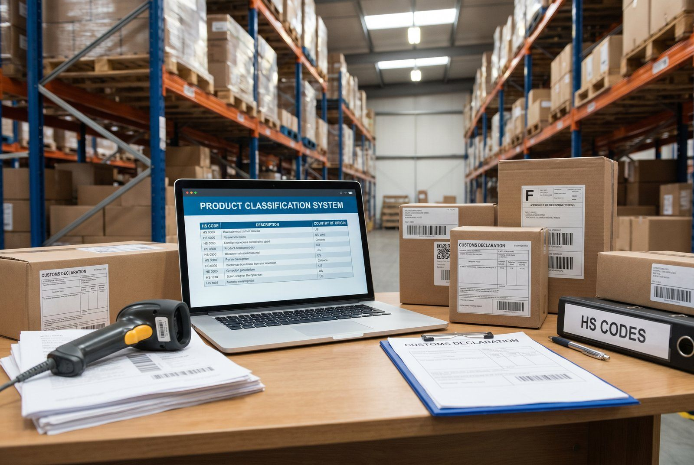

Forkert tarifkode på UK-forsendelse. Pakken stoppes i tolden.
Kunden skal betale 25% told i stedet for 0%. Kunden returnerer ordren.
Du taber: 1.800 kr. i fragt + varer + kunden.
Tarifkoder (HS, CN, TARIC) identificerer varer i international handel. Forkert kode = forkert told = stop i tolden. Her er hvad du skal vide.
Hierarkiet: Fra HS til TARIC
Kodesystemet er opbygget i lag, fra globalt til nationalt:
6-cifret HS-kode → Globalt (WCO, bruges i 200+ lande)
↓
8-cifret CN-kode → EU (Kombineret Nomenklatur)
↓
10-cifret TARIC → EU's interne handelsreguleringNiveau 1: HS-koden (6 cifre) , det globale fundament
HS står for Harmonized System og administreres af World Customs Organization (WCO). Det er det internationale grundlag som alle landes toldsystemer bygger på.
- 6 cifre: Kapitel (2) + position (2) + underposition (2)
- Eksempel:
6204.62= Damers bukser af syntetiske tekstilfibre - Bruges til: Toldberegning ved handel med tredjelande, Intrastat-indberetning (de 6 første cifre)
👉 Har du samme udfordring? Se hvordan SmartPack løser det i praksis
Niveau 2: CN-koden (8 cifre) , EU's kombinerede nomenklatur
CN (Combined Nomenclature) er EU's udvidelse af HS. De 2 ekstra cifre specificerer varen yderligere inden for EU.
- 8 cifre: HS (6) + 2 EU-specifikke cifre
- Eksempel:
6204.62.31= Damers bukser af syntetiske tekstilfibre, af syntetiske fibre - Bruges til: Intrastat-indberetning (obligatorisk 8-cifret), EU-toldangivelser
- Opdateres: Hvert år pr. 1. januar
Niveau 3: TARIC-koden (10 cifre) , EU's handelspolitik
TARIC (Tarif Intégré Communautaire) er EU's 10-cifrede kode der indeholder yderligere handelspolitiske foranstaltninger.
- 10 cifre: CN (8) + 2 TARIC-cifre
- Eksempel:
6204.62.31.10 - Bruges til: Toldangivelser ved import til EU fra tredjelande, anti-dumping-foranstaltninger, kvoter
- Vigtig: TARIC bestemmer den faktiske toldsats ved import til EU
Find TARIC-koder på: ec.europa.eu/taxation_customs/dds2/taric
UK: Commodity Code (10 cifre) efter Brexit
- 10-cifret UK commodity code (svarer til TARIC, men er Storbritanniens eget)
- Database: trade.gov.uk/tariff/lookup
- Bruges til: Alle forsendelser til UK, uanset om de er B2C eller B2B
Den kritiske £135-grænse:
| Forsendelsesværdi | Hvad sker der |
|---|---|
| Under £135 | Moms (VAT) opkræves ved salg, du skal have UK VAT-nummer og opkræve 20% UK VAT ved checkout |
| Over £135 | Tolden betales ved import, køber betaler told og moms ved levering (eller du vælger DDP) |
Praktisk: Sådan finder du den rigtige kode
Metode 1: EU TARIC-databasen
- Gå til ec.europa.eu/taxation_customs/dds2/taric
- Søg på varens beskrivelse (engelsk anbefales)
- Naviger ned i hierarkiet til korrekte underposition
- Notér den 10-cifrede TARIC-kode
Metode 2: Toldstyrelsen (Danmark)
- Gå til toldst.dk
- Under “Tariffer og varekoder”
- Brug søgefunktionen til at finde din vare
Metode 3: Bindende tariferingsoplysning (BTO)
Er du i tvivl, kan du ansøge om bindende tariferingsoplysning hos Toldstyrelsen. Du får et juridisk bindende svar der gælder i 3 år. Anbefales ved produkter i gråzoner.
Eksempler på kodesæt
| Vare | HS | CN | TARIC | UK commodity |
|---|---|---|---|---|
| Plastiklegetøj | 950300 | 95030099 | 9503009900 | 9503009900 |
| Strikket damegenser | 611020 | 61102010 | 6110201000 | 6110201000 |
| Lithium-ion batteri | 850650 | 85065010 | 8506501000 | 8506501000 |
| Kaffekopper (keramik) | 691110 | 69111090 | 6911109000 | 6911109000 |
Eksempler til illustration, verificér altid koder for dine specifikke produkter.
Typiske fejl
- Bruger 6-cifret HS-kode til toldangivelse: EU-angivelser kræver 10-cifret TARIC
- Kopierer konkurrenters koder blindt: Forkert klassificering er dit ansvar, ikke konkurrentens
- Glemmer at opdatere koder 1. januar: CN opdateres hvert år
- Bruger samme kode til EU og UK: UK har sit eget system, søg specifikt
- Undervurderer konsekvenser: Forkert klassificering kan medføre efteropkrævning af told + renter
SmartPack og tarifkoder
SmartPack har to separate felter i produktdata:
- Tarifkode: Primær HS/CN/TARIC-kode for produktet (bruges til EU-forsendelser og Intrastat)
- Lande-tarifkoder: Lande-specifikke koder, fx UK commodity code for britiske forsendelser
Disse felter følger automatisk med i forsendelsesdokumenter og toldangivelser.
Brug denne artikel
- ✓ Tjek at alle produkter har en 8-cifret CN-kode (EU-handel)
- ✓ Tjek at produkter der sendes til UK har en 10-cifret UK commodity code
- ✓ Registrér koder i SmartPack under Tarifkode + Lande-tarifkoder
- ✓ Sæt kalenderreminder til at opdatere CN-koder hvert år pr. 1. januar